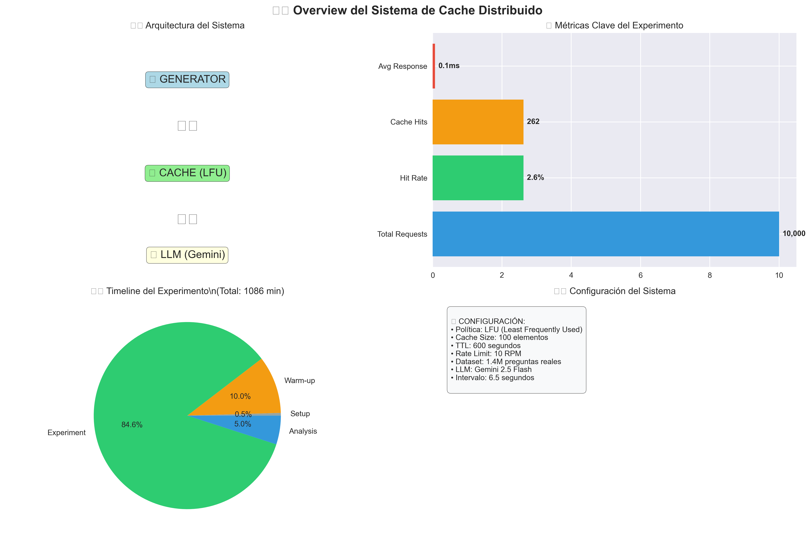
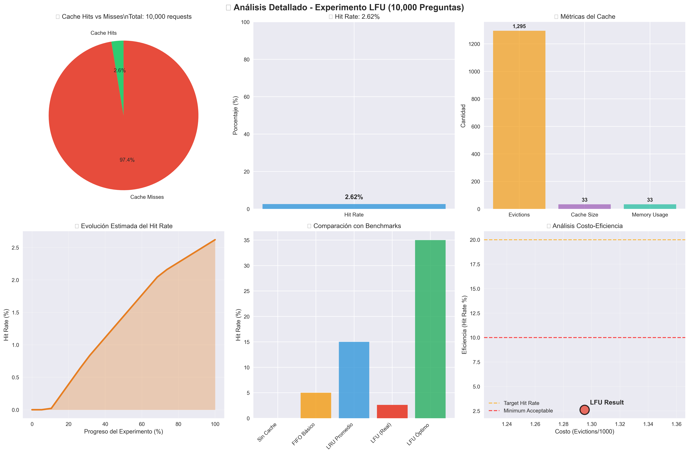

📊 Dashboard de Análisis de Cache
Sistema Distribuido de Q&A con 10,000 Preguntas Reales
Generado: 2025-10-01 16:07:23
📄 Reportes Detallados
📊 Visualizaciones Generadas
🏗️ System Overview - Arquitectura

Archivo: system_overview.png
🧪 Lfu Detailed Analysis - Experimento LFU

Archivo: lfu_detailed_analysis.png
🐳 Docker Services Analysis - Servicios Docker

Archivo: docker_services_analysis.png
⚙️ Información del Sistema
🏗️ Arquitectura: Microservicios con Docker Compose
💾 Cache: Políticas LRU, LFU, FIFO
🤖 LLM: Google Gemini 2.5 Flash
📊 Dataset: 1.4M+ preguntas reales
🔄 Messaging: Apache Kafka
⚡ Rate Limit: 10 RPM (Gemini API)
💾 Cache: Políticas LRU, LFU, FIFO
🤖 LLM: Google Gemini 2.5 Flash
📊 Dataset: 1.4M+ preguntas reales
🔄 Messaging: Apache Kafka
⚡ Rate Limit: 10 RPM (Gemini API)
🛠️ Herramientas de Análisis
Este dashboard fue generado usando las siguientes herramientas:
- 📊 quick_graphs.py - Análisis específico del experimento LFU
- 🐳 docker_analyzer.py - Métricas de servicios Docker
- 📝 log_analyzer.py - Análisis completo de logs
- 🎨 visualization_coordinator.py - Coordinador de visualizaciones